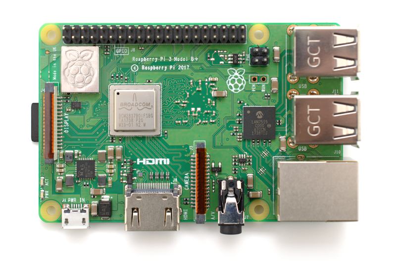

Using the command line and plain-text representations
Diego Sandoval
Kigali, 05.03.2019
* Graphical interfaces are great and extremely useful in many applications: windows managers, blender, ... * When it comes to development, programming, system administration however, the command line is much more powerful and versatile
Motivation
* Make a list of all your files in a given folder and email it to your friend.<br> * Document the process for future reference <pre class="bash"><code class="fragment fade-in"> ls -1 > list.txt </code></pre>
* Count the number of pdfs in a given folder * Document the process <pre class="bash"><code class="fragment fade-in"> ls *.pdf -1 | wc -l </code></pre>
* Find all the zip files in your home directory <pre class="bash"><code class="fragment fade-in"> find $HOME -iname "*.zip" </code></pre>
* Download all pdfs or mp3 from a given website <pre class="bash"><code class="fragment fade-in"> wget -A pdf,mp3 -r -l 1 -nd http://example.com </code></pre>
Why?
The command line is: * much faster * universal: can be understood by humans and machines * easier to document (and to communicate) * can be automated: * scripts * repetitive tasks * periodic tasks: crontab * self-documented tasks, come back in one year time * inline documentation, no need to memorize
Structure<br> command options arguments <pre class="bash"><code> ls folder --sort time -r cp file1 file2 dest cp -r folder1 folder2 dest </code></pre>
It is quicker <pre class="bash"><code> mount /mnt/usb && cp -r folder /mnt/usb && umount /mnt/usb </code></pre>
Some devices do not have a display<br> 
Do one thing and do it well * Redirection * Pipes * Logical operators
Self-contained documentation<br> Example: installing pyviz<br> <pre class="bash"><code> conda update conda conda create -n pyviz-tutorial python=3.6 conda activate pyviz-tutorial conda install -c pyviz/label/dev pyviz pyviz examples cd pyviz-examples jupyter notebook </code></pre>
What kind of abilities or super powers would you like to acquire?